Quick Start¶
- Note: You can skip this page, just follow instructions from the Theme Walkthrough to complete all steps.
Theme Walkthrough Page¶
Theme provide step by step walkthrough guide to help you quickly learning:
- Activate recommended plugins.
- New features of the theme.
- Theme options.
- Import sample data to look like the demo site.
Now click the button Theme Quickstart which appears after the theme is activated (alternatively, Appearance > WPDanceClaraTheme):
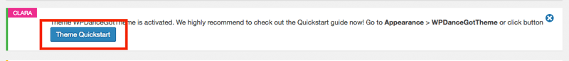
Next, click button Let's get started now and follow the rest instruction showing on your page:
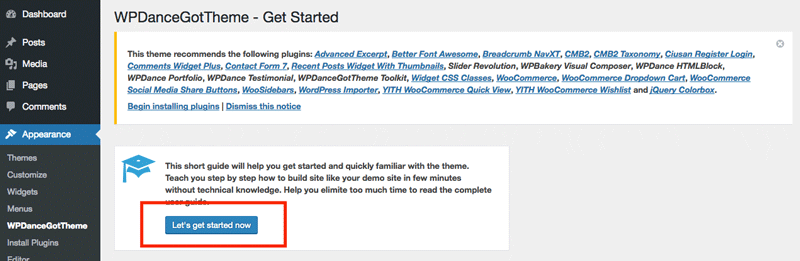
Install Plugins¶
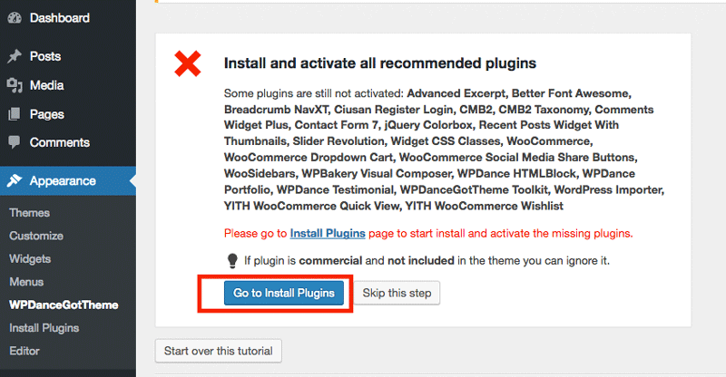
We recommend install and activate all plugins for quick start. Laterly, you can deactivate any unnecessary plugin to improve site performance:
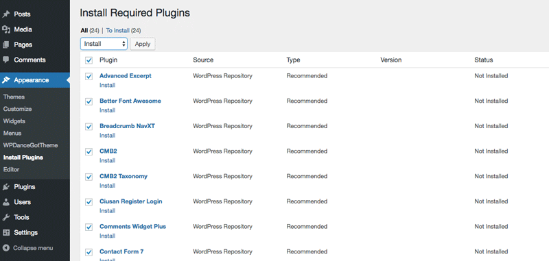
- Install & activate plugins may take a while. Please patience. Also, we recommend activate each plugin step by step.
After all plugins are installed and activated, return the theme walkthrough page: 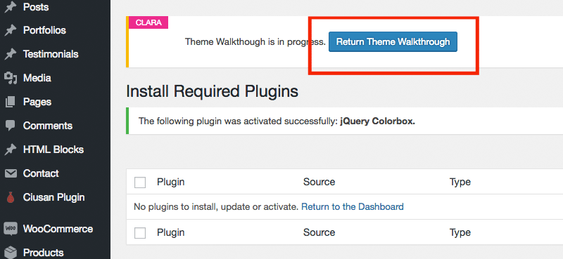
Import Sample Sliders¶
Follow the instruction to import sample sliders:
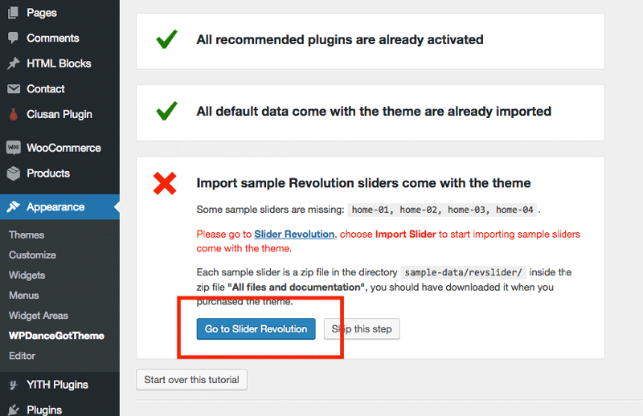
Click Import Slider to start importing sample sliders:
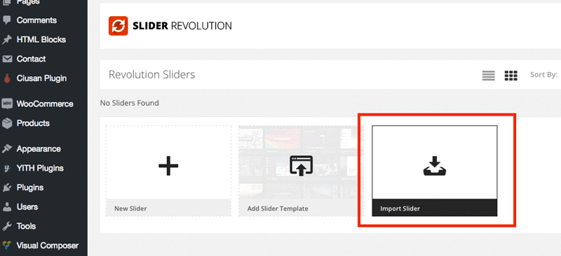
Please find the zip files contain sample sliders in the full package download from ThemeForest Download page:
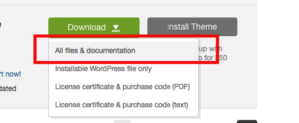
Unzip the file and open directory sample-data/, import all slider home-01, home-02, home-03, home-04...
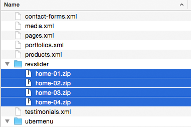
Import Sample Data¶
Go back to the theme walkthrough page, a new instruction will appear to guide you import sample data to look like our demo site.
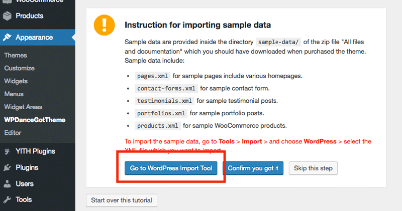
Click Run Importer
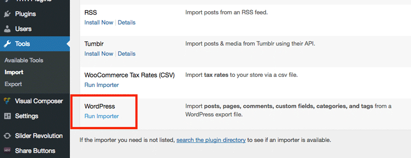
Choose sample data file provided in the full package file to start importing:
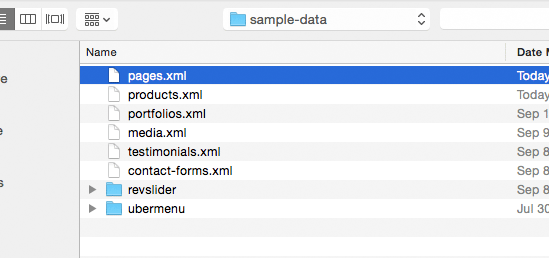
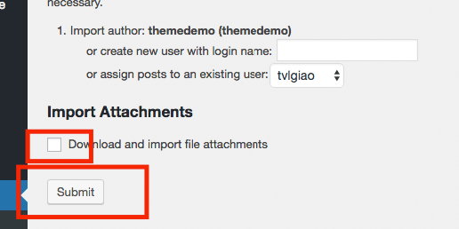
- Note: Don't choose **Download and import file attachments
Repeat importing all other sample data files.
After imported all sample data, go back the theme walkthrough page. Click button Confirm you got it to finish this step:
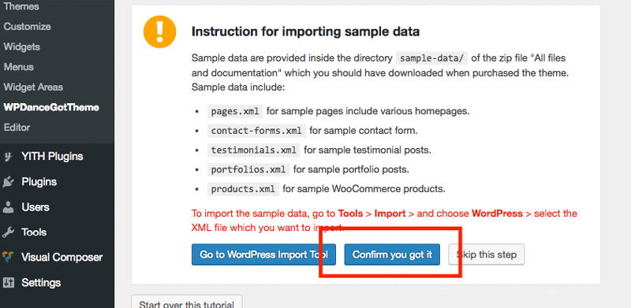
Choose Default Header & Footer¶
The new instruction will appear to show you how to configure default Header & Footer for your site. Let follow the instruction, click button Go to Customizer:
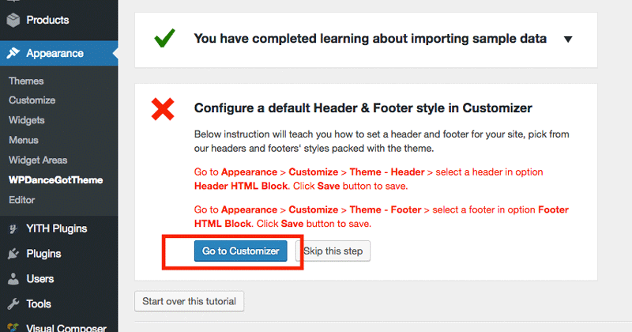
Choose a header and footer you want to set as default and click Save & Publish button:
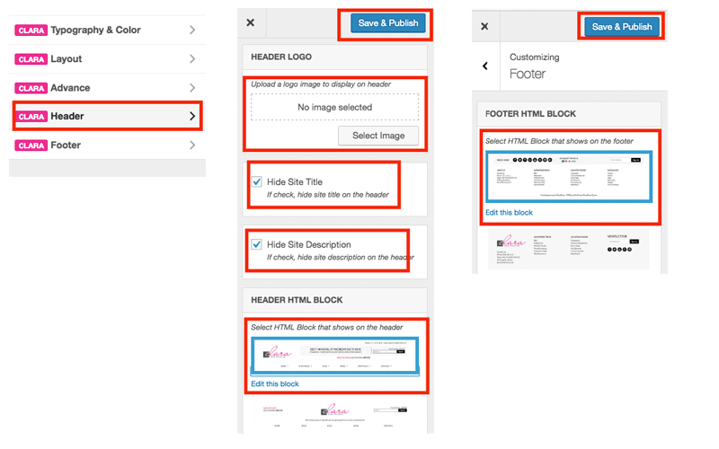
Back to the theme walkthrough page.
Choose a Homepage¶
Follow the next instruction to specify a homepage. Click Go to Customizer button:
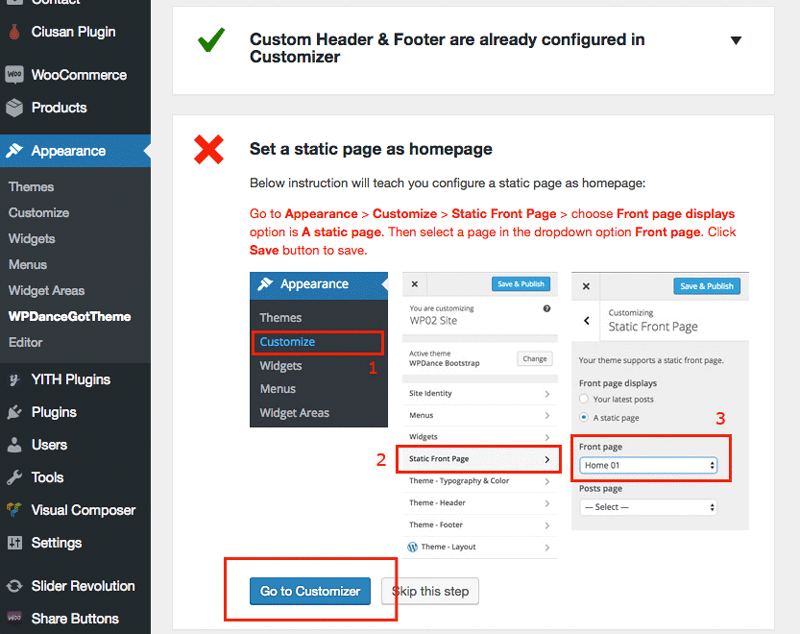
Configure as showing below, then click Save & Publish button:
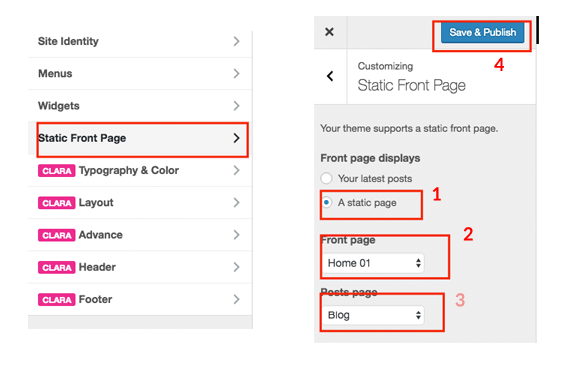
Back to the theme walkthrough page.
Introduce Theme Customizer¶
New instruction appears to introduce about Theme Customzer, check it out and click button Confirm you got it to finish:
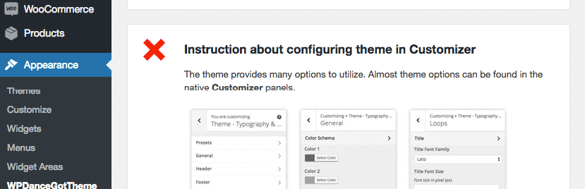
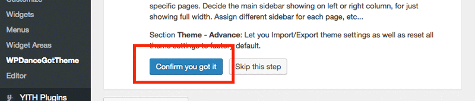
Introduce Theme Extra Options¶
New instruction appears to introduce about theme options available for specific pages, posts, post types, categories, taxonomies...
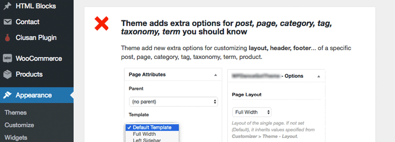
Check it out and click Confirm you got it button to finish this step:
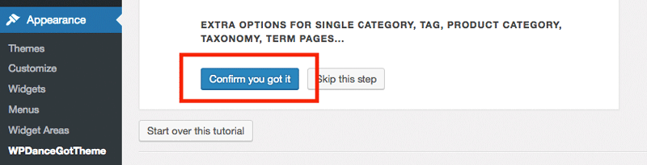
Congrats! You have just completed the quick start guide.
View Your Website¶
Now let's visit your website front page, before starting customization.
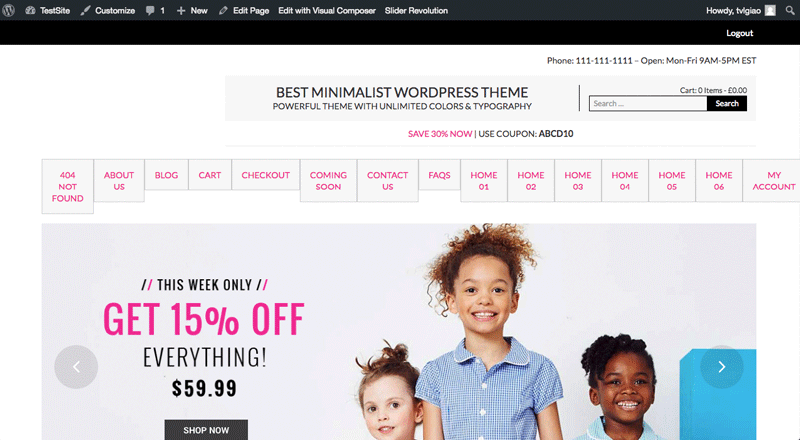